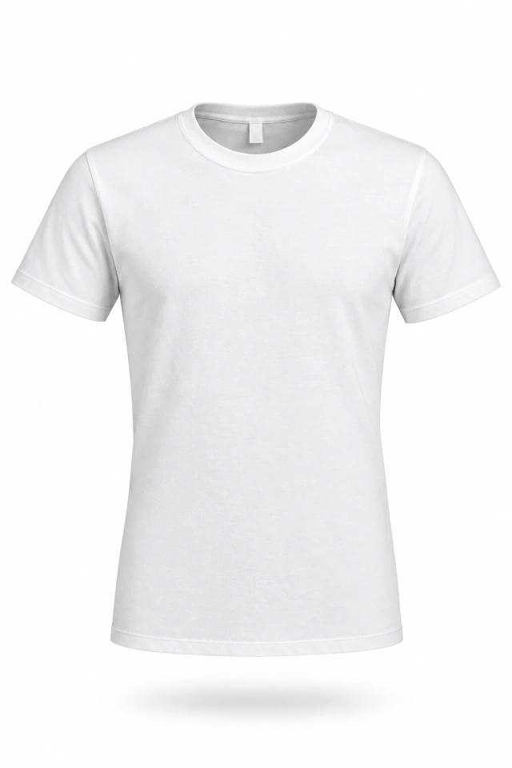
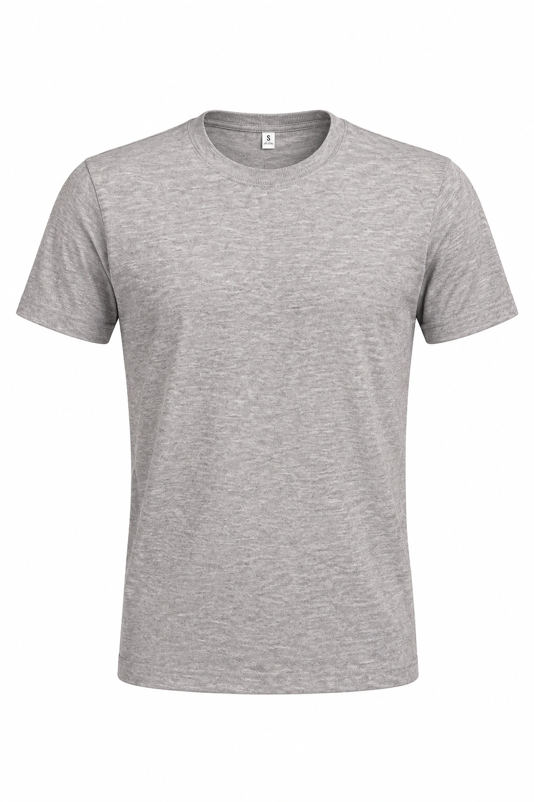
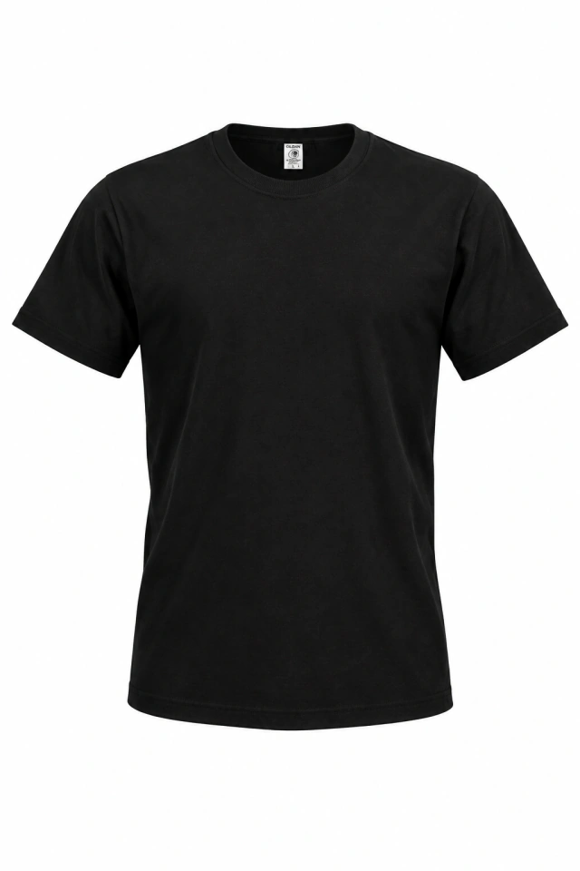
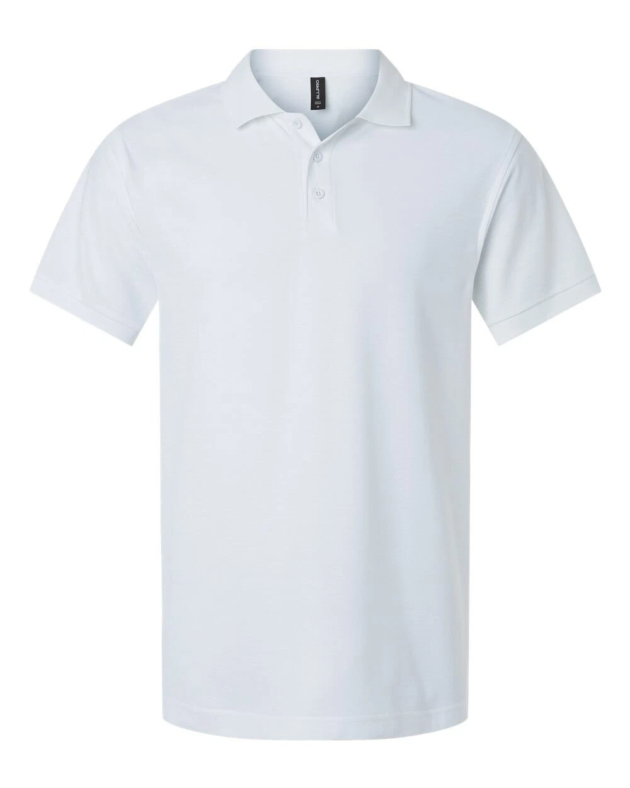
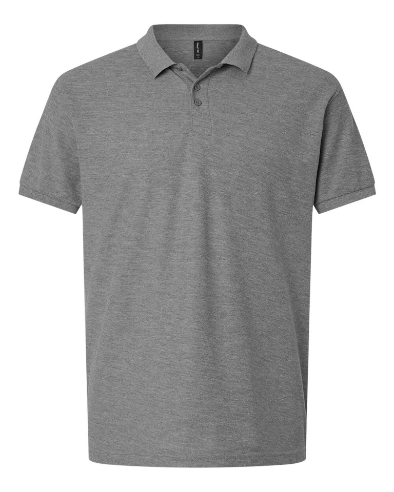
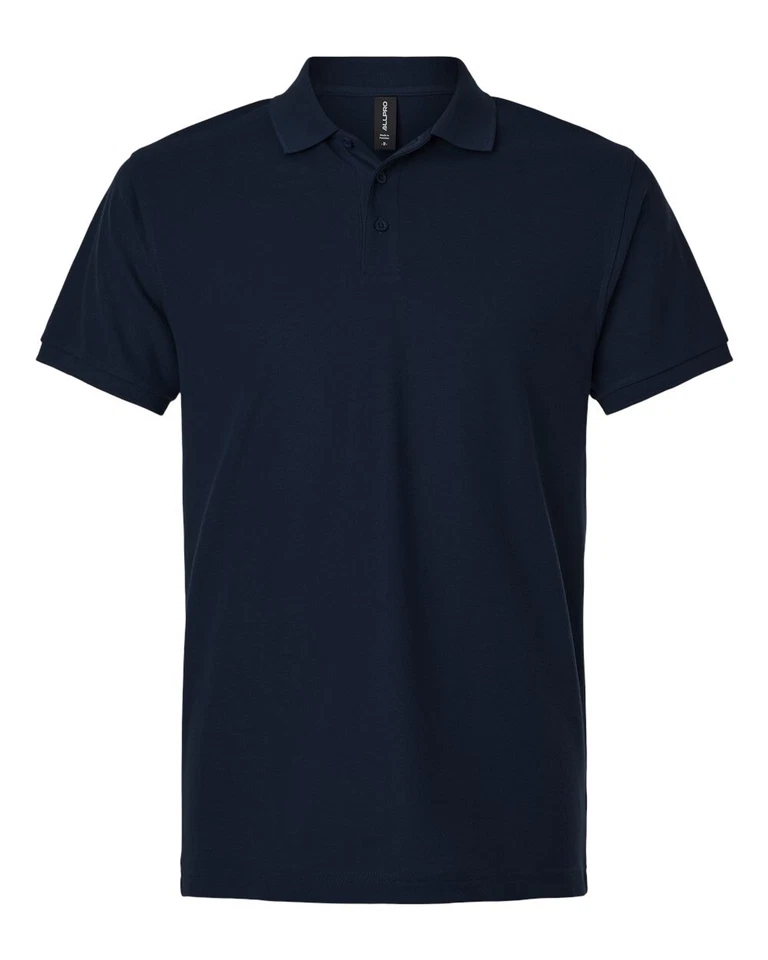

GASTRONÓMICAMENTE
Indumentaria de trabajo
REMERAS
Algodón peinado



CHOMBAS
Piqué



Colores: Blanco / Gris / Negro.
Talles: S / M / L / XL / 2XL / 3XL / 4XL
Remera de Algodón Peinado: $10.000.-
Chombas de Piqué: $16.000.-